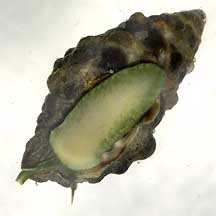
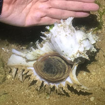
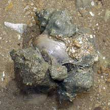
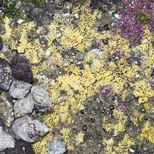
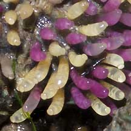
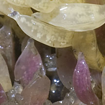
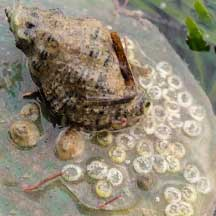

|
|
| shelled snails text index | photo index |
| Phylum Mollusca > Class Gastropoda |
| Drills Family Muricidae updated Aug 2020
Where seen? You will almost be certain to meet this ferocious predator on our rocky shores! Drills are commonly seen on boulders and rocks, including man-made structures such as breakwaters and jetty pilings. Features: They range from small shells to some that can be as big as your hand! Among the common drill species on our shores are Rock-shell (Thais sp.), Drupes (Morula sp.) and Murex (Chicoreus sp.). Drills usually have thick shells and a thick operculum made of a horn-like material. Those with complicated spines on their shells usually move by holding their shells above the surface as they move along the surface. |
 Kusu Island, Dec 04 |
 Pulau Sekudu, Jul 19 Photo shared by Rene Ong on facebook |
 Most have a strong foot. Changi, Aug 08 |
| Bored to Death: Drills that live
on the rocks are predatory molluscs that bore into other shelled creatures,
especially barnacles. To bore a hole through the victim's shell, a drilling snail softens the shell with a weak acid secreted by a special gland on the underside of its foot. The softened shell is then slowly scraped off by the snail's radula. The radula is the main physical tool in creating the hole. It can take eight hours for a drill to get through a shell 2mm thick. Yawn! Other drill food and feeding methods: Some drills may also pry open the shells of bivalves with a tooth on the lip of their shell. Others may also get to limpets by inserting their proboscis under the limpet's shell. Some may also hunt buried clams. Some prey on worms, the eggs of other snails and even corals. Some deeper-water members of the Family Muricidae eat worms and sea urchins. |
 A drill feeding on Little black mussels? Lim Chu Kang, Aug 05 |
 A drill clasping a Bazillion snail. Tanah Merah, Apr 12 |
 A 'gang' of drills stuck onto a clam. Tuas, May 07 |
| To dye for: Many drills have a
gland that secretes a colourless mucus that turns purplish when exposed
to air. This secretion is a neurotoxin that paralyses or kills other
sea creatures. Humans have used this mucus as a rare dye (see below). Drill Babies: Some drills lay clusters of bright yellow egg capsules on hard surfaces. Each egg capsule may contain 20-40 eggs. The egg capsules turn purple when the free-swimming larvae hatch. These swim about for a few weeks before they change into crawling juveniles. In some, however, crawling juveniles emerge from the egg capsules. |
 Drills laying eggs on a rock Pulau Sekudu, Jan 06 |
 Close up of egg capsules Changi, Jul 05 |
 Close up of egg capsules Punggol, Jun 12 |
 Drill eating eggs laid by another animal? East Coast (PCN), May 21 Photo shared by Vincent Choo on facebook. |


| Human uses: Since 1,500 BC in
the Mediterranean, snails of the Family Muricidae were harvested to
produce a dye called Tyrian purple (which was actually more maroon).
The dye resisted fading, but involved so much labour to produce that
only royalty and the very rich could afford it. Thousands of shells
were crushed to obtain minute quantities of the dye. The dye was worth
several times its weight in gold. The dye industry brought fame and fortune to Tyre (now modern Lebanon). Tyre was a great Phoenician city. In fact Phoenicia means "purple people". Tyre ruled the seas and founded prosperous colonies such as Cadiz and Carthage. The prosperity of Tyre allowed the arts and sciences to flourish. For example, Marinus of Tyre was considered the founder of mathematical geography and introduced the concept of latitude and longitude in map design. As merchants who needed to keep records, the Phoenicians simplified the 550 characters in the cuneiform alphabet with a phonetic alphabet, based on distinct sounds, consisting of 22 alphabets. This alphabet, with modifications introduced by the Greeks and Romans, is the one we use today. Voracious predators, some drills are considered a pest on oyster farms in Taiwan and Japan. Recently, drills have become useful as bioindicators of pollutants in the environment, such as for anti-fouling chemicals used to prevent encrusting animals from growing on ships and other installations in the sea. The toxins kill drill larvae, or result in deformities in adults. Status and threats: Chicoreus ramosus is listed as 'Endangered' and the Murex snail (Murex trapa) as 'Vulnerable' in the Red List of threatened animals of Singapore. Our other drills are not on this list. However, like other creatures of the intertidal zone, they are affected by human activities such as reclamation and pollution. Trampling by careless visitors and over-collection can also have an impact on local populations. |
| Some Drills on Singapore shores |


| Family
Muricidae recorded for Singapore from Tan Siong Kiat and Henrietta P. M. Woo, 2010 Preliminary Checklist of The Molluscs of Singapore. in red are those listed among the threatened animals of Singapore from Davison, G.W. H. and P. K. L. Ng and Ho Hua Chew, 2008. The Singapore Red Data Book: Threatened plants and animals of Singapore. ^from WORMS +Other additions (Singapore Biodiversity Record, etc)
|
Links
References
|